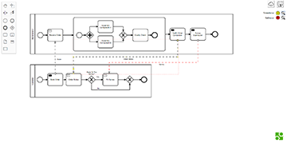

PURPLE

PURPLE (PURpose Parametric Log gEnerator) is an extensible progressive web app written in Java. The PURPLE framework is meant to be parametric on the mining purpose, thus it can produce distinct event logs from the same model. Moreover, it supports the simulation of models in different languages, reconducting their execution on a common behavioral model, which is the labeled transition systems. Thus, one can choose a modeling language (e.g., BPMN, DCR, Petri nets, WF-nets) and a mining purpose (e.g., rediscoverability, what-if analysis, compliance checking, decision mining).
Find out more...S³
S³ verifies the correctness of multi-layered BPMN collaboration diagrams in particular with respect to safeness and soundness. The tool is based on a client-server architecture composed by a client, developed in Html/Javascript and embedding the Camunda bpmn.io modeller, and a web-service, developed in Java using the RESTful technology.
Find out more...UBBA

UBBA (Unity Based BPMN Animator) is a tool that, taken in input a BPMN file allows to create a virtual world with a 3D visualization of all the elements present inside the BPMN model. More in detail, UBBA aims at reproducing the setting of a BPMN collaboration diagram and animate its execution from the point of view of the resource, by means of token flow.
Find out more...MIDA

MIDA (Multiple Instances and Data Animator) is a BPMN animator based on the Camunda bpmn.io web modeler. The result is a complete tool for animating BPMN models in collaborative, multi-instance and data-based contexts. MIDA web application is written in JavaScript. It embeds BPMN models into personal browsers without using any server backend.
Find out more...